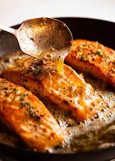

JenErik Salmon Filets

Description
As two people who love both seafood and garlic, lots of it, Jen and I can simply not stay away from this recipe! Garlic roasted salmon filets really get the job done and are a cinch to make. Perfect for a date night in or a fast meal during the work week, this one will not steer you wrong. If you are looking for paring options this dish is fantastic with a bottle of white white wine and some crispy brussels. Enjoy the feast!
Ingredients
- 2 6 oz salmon filets (skin on)
- 2 tsp Salt
- 1/2 tsp black pepper
- 1 tsp red pepper flakes
- 1 1/2 tbsp olive oil
- 4 cloves of garlic
- 6 tbsp salted butter
- 1 tsp lemon juice
- 2 tsp parsley
Instructions
- Season Salmon: Take salmon out of fridge 30 minutes prior to cooking. Sprinkle both sides with salt, pepper and red pepper flakes
- Sear Salmon 3 mins: Heat oil and 2 cloves of garlic in large non-stick skillet over medium high heat. When garlic is lightly roasted add salmon, presentation side (i.e. curved side) down, and cook for 3 minutes until golden.
- Turn, cook 1 min, then add butter: Turn salmon and cook the skin side for 1 minute. Then put butter in
- Baste 1 1/2 minutes: Once butter is melted and foaming, add garlic and immediately start spooning the bubbling butter continuously over the salmon for 1 1/2 minutes. To do this, tilt the pan slightly so the butter pools on one side. Using a large spoon, scoop the butter up and coat the filets in it.
- Remove salmon from stove: Check internal temperature of salmon. It should be 50°C/122°F for medium-rare (optimum juiciness pull temp). Remove salmon to a plate. Rest for 3 minutes - it will rise to 53°C/127°F.
- Add lemon juice to butter: Put pan back on unlit stove to keep butter hot. Add lemon juice.
- Serve: Place salmon on serving plates. Spoon over butter (be judicious, it's rich!), garnish with a sprinkle of parsley.